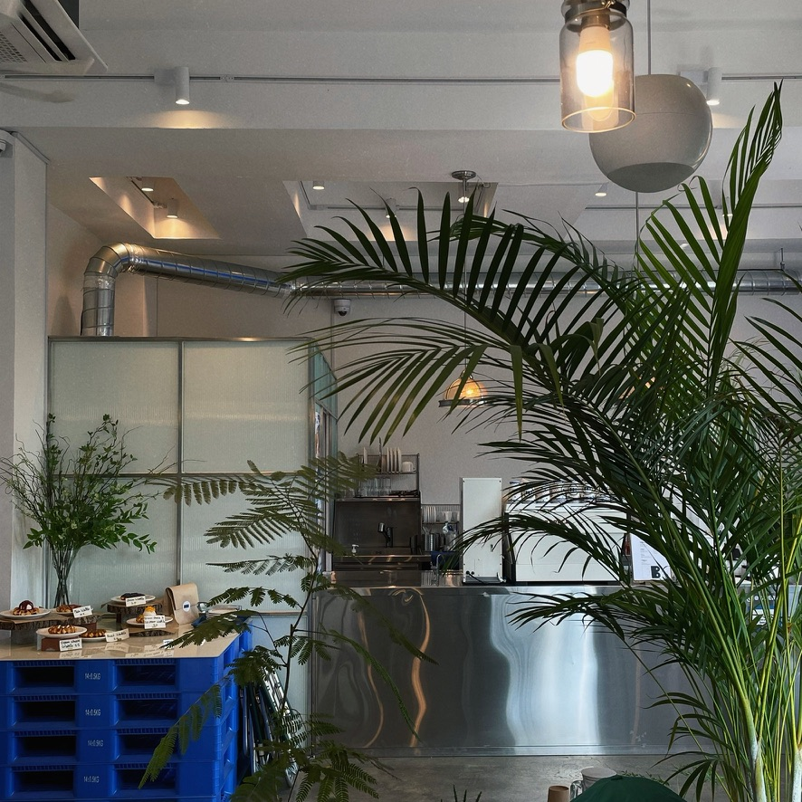
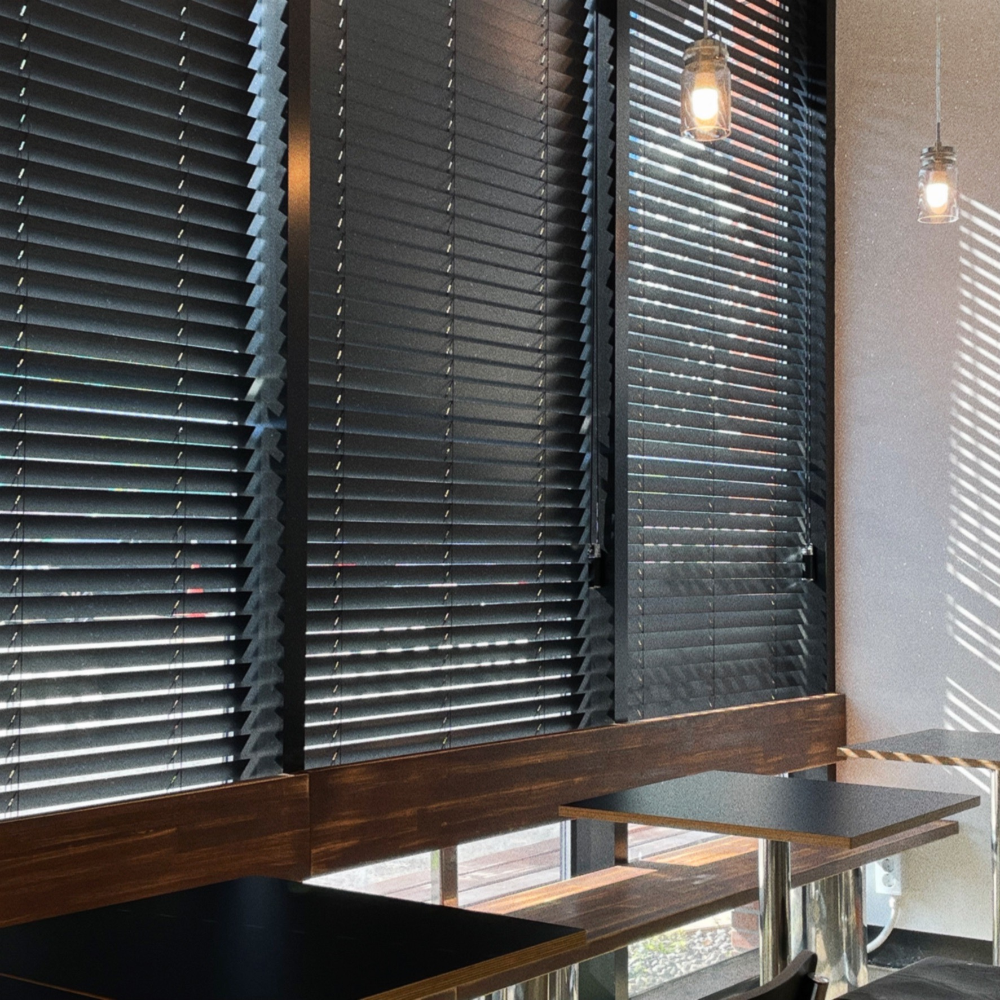
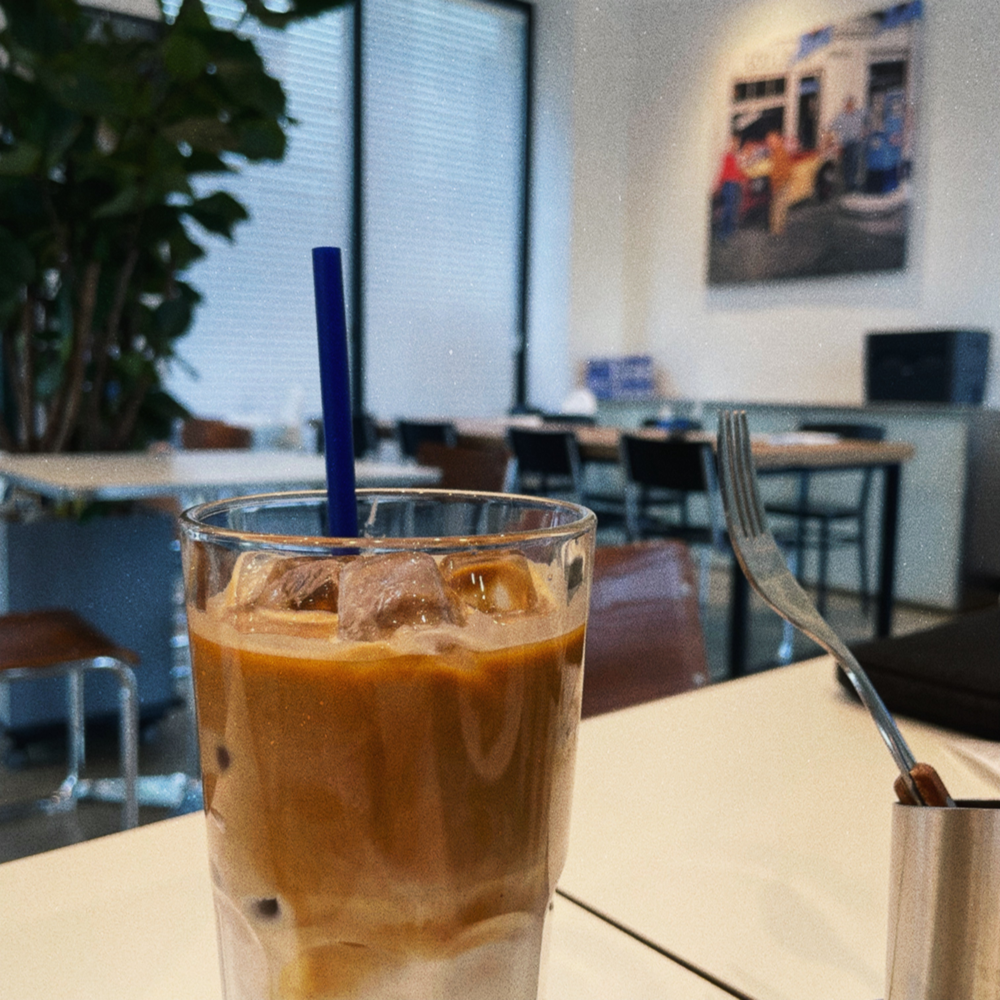

인스타그램 태그로 검색하면 수두룩하게 나오는 그런 카페들도 좋지만,
요즘은 슬리퍼 신고 편하게 갈 수 있는, 시원한 라떼 한 잔 마시며 온전히 그 시간을 즐길 수 있는,
그런 조용한 동네 카페에 발길이 더 가는 것 같다.


평일 오전 모두가 일할 시간에 커피 한 잔 하며 읽고 싶었던 책을 읽기도 하고,
블라인드 사이로 들어오는 햇살에 아무 생각없이 멍 때리다 보면 그 자체로 힐링이 된다.
사실 우리 동네에는 그런 카페가 없기 때문에 남의 동네까지 왔는데 참 잘 찾은 것 같다. 🙂
그리고 여기는 와플이 정말 맛 있다.